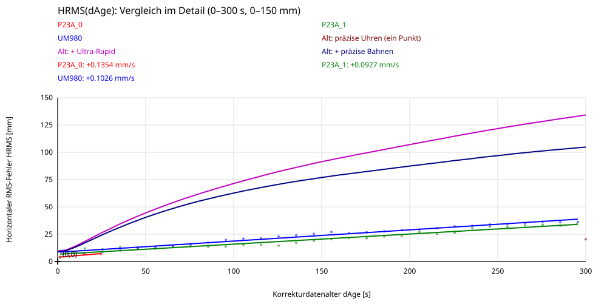
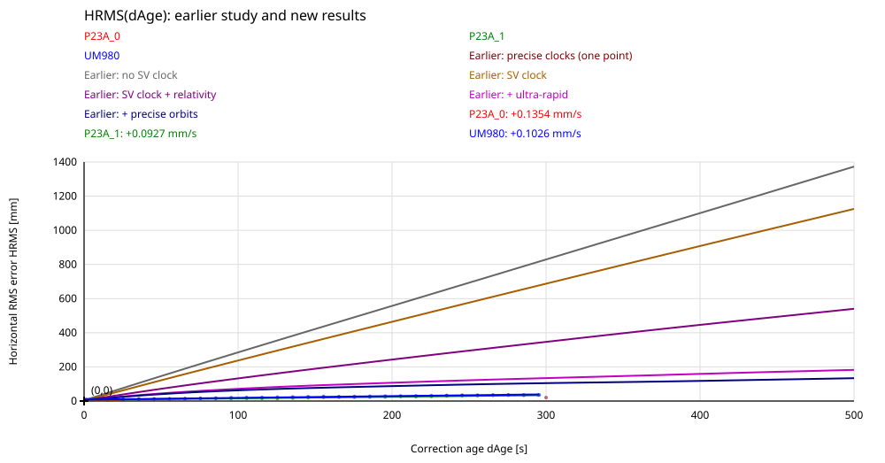
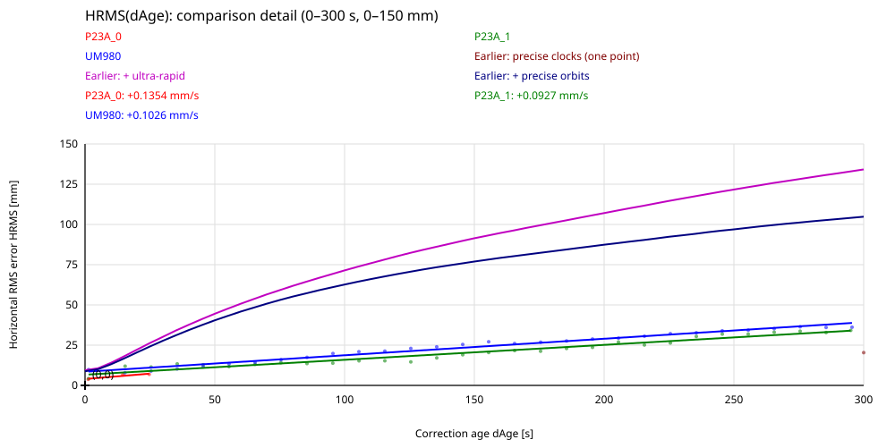
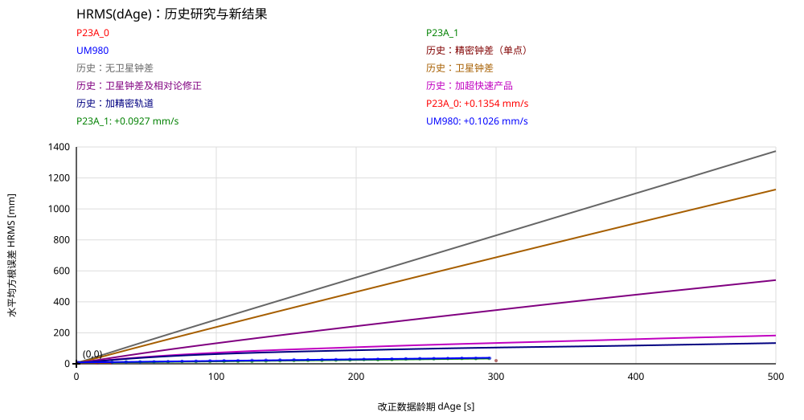
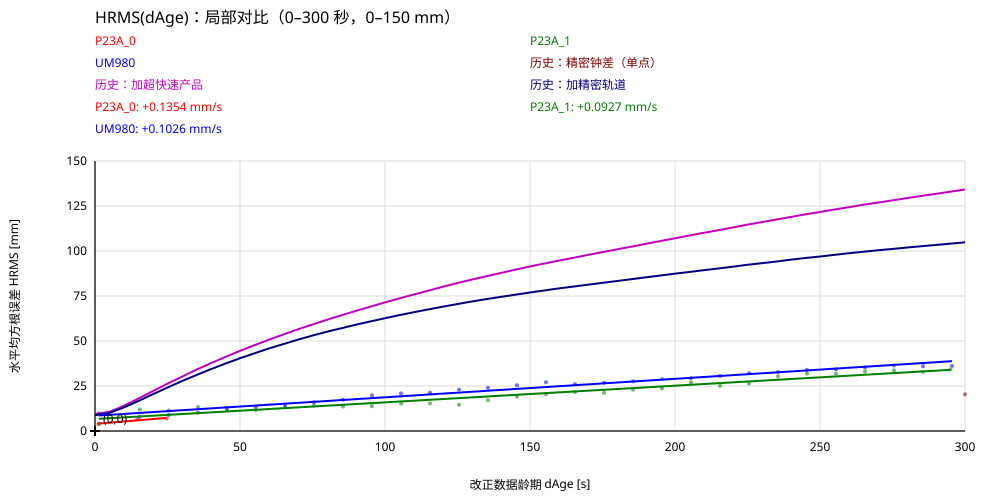

Radius: 0.33097 m. Mittlere Umdrehungsdauer: 169.599 s (76 vollständige Umdrehungen, ohne Referenzlücken). UTC: 3:41:09 bis 8:15:08. Datum: 2026-11-03 (aus UM980; gleicher Tag für P23A angenommen).
Rot: P23A_0; grün: P23A_1; blau: UM980; schwarzes Kreuz: Sollposition. Nur RTK-fixed-Positionen (GGA-Qualität 4) sind enthalten. Die Winkelgrafik zeigt den Drehwinkel geteilt durch 360° als Anzahl der Vollkreise.
Der Referenzwinkel wird aus P23A_0 abgeleitet. Dessen tangentialer Fehler ist damit nicht unabhängig messbar; die rote Spur beschreibt hauptsächlich den radialen Restfehler. Keine Extrapolation oder Interpolation über große Referenzlücken. Keine nachträgliche Zeitverschiebung der Empfänger. Über Referenzlücken ist die Anzahl ganzer Umdrehungen unbekannt; der entfaltete Winkel setzt danach mit dem nächstliegenden Winkel fort (Segmentnummer in referenz_winkel.csv).


dAge ist das gemeldete GGA-Korrekturdatenalter [s]. HRMS = sqrt(Mittelwert(Ostfehler² + Nordfehler²)) je 10-s-Intervall (0,10], (10,20], …; dAge=0 zählt zum ersten Intervall. Punkte liegen beim mittleren dAge je Intervall. Die Geraden werden ungewichtet an die Intervall-HRMS-Werte angepasst, mit freiem Achsenabschnitt und nur im belegten Altersbereich; ihre Steigungen stehen in mm/s. Alle verwendbaren RTK-fixed-Epochen mit gültigem dAge sind enthalten, ohne Paarung der Receiver. dAge ist keine extern gemessene Outage-Dauer.

Vergleich mit Abbildung 1, Seite 2 von „Frühere Outage Results.pdf“: Alte Kurven sind aus PDF-Vektorlinien rekonstruierte Näherungen, keine Rohmesswerte. Der einzelne Punkt bei 300 s und etwa 20 mm verwendet finale präzise Uhren und Bahnen. Neu: HRMS je 10-s-Intervall und lineare Fits nur im gemessenen Altersbereich. Unterschiedliche Versuchsbedingungen und Referenzen begrenzen die Vergleichbarkeit. Die Detailansicht zeigt die zwei niedrigeren alten Kurven und den präzisen Uhrenpunkt; alle alten Kurven stehen in der Gesamtansicht.


P23A_1 kommt in diesem Test bei den typischen horizontalen Abweichungen besser mit Referenzdaten-Outages zurecht als UM980 (kleinerer RMS, Median und 95%-Quantil). UM980 hat dagegen den kleineren maximalen Einzelfehler. P23A_0 dient mit kontinuierlichen Referenzdaten als Referenz und ist kein Outage-Vergleichskandidat.
Verglichen werden ausschließlich identische UTC-Epochen, an denen beide Empfänger RTK-fixed sind und beide ein Korrekturdatenalter über 10 s melden. Dies kennzeichnet veraltete Korrekturdaten, nicht extern protokollierte Schaltzeiten. Nicht-fixed-Positionen und Referenzlücken sind ausgeschlossen; das Fazit bewertet daher die Genauigkeit der verbleibenden Fixed-Lösungen, nicht die vollständige Verfügbarkeit während aller Outages.
| Receiver | Epochen | RMS [cm] | Median [cm] | 95%-Quantil [cm] | Maximum [cm] |
|---|---|---|---|---|---|
| P23A_1 | 6812 | 1.89 | 1.31 | 3.59 | 9.65 |
| UM980 | 6812 | 2.68 | 1.90 | 5.42 | 7.94 |
Die aktuellen Receiver erreichen bei ungefähr fünf Minuten alten Korrekturen etwa 3–4 cm HRMS. Das liegt deutlich unter den früheren Stufen 1–5, erreicht aber nicht den damaligen Wert mit präzisen Satellitenuhren aus Stufe 6. Welche Verfahren die heutigen Receiver intern einsetzen, lässt sich aus den Positionsdaten allein nicht bestimmen.
Quelle: „Frühere Outage Results.pdf“, Punkte 1–6 auf Seiten 1–2, Abbildung 1 auf Seite 2. Die folgenden historischen Werte bei 300 s sind Näherungen aus den rekonstruierten Kurven; nur Stufe 6 ist ein einzelner, im Text mit etwa 20 mm angegebener Punkt. Unsere 34,2 mm (P23A_1) und 36,2 mm (UM980) stammen aus 290 < dAge ≤300 s, nicht aus einer Fitvorhersage. P23A_1 reicht bis 299 s.
1. Alte Referenzdaten unverändert verwenden: Früher starker, nahezu linearer Fehleranstieg bis etwa 829 mm HRMS bei 300 s. Unsere 34–36 mm zeigen ein wesentlich günstigeres Verhalten. Das Alter der Korrekturen allein bestimmt die Genauigkeit nicht; die Verarbeitungsmethode und die Testbedingungen sind wesentlich.
2. Broadcast-Satellitenuhren berücksichtigen: Verbesserung auf etwa 687 mm. Die zeitliche Änderung der Satellitenuhren ist wichtig, doch das einfache Uhrenmodell reichte im früheren Versuch nicht aus.
3. Relativistische Korrektur ergänzen: Weitere Verbesserung auf etwa 347 mm. Bei zeitversetzten Referenz- und Roverdaten werden Modellterme relevant, die sich bei gleichzeitigen Beobachtungen weitgehend herausheben. Sorgfältige Modellierung ist entscheidend.
4. Ultra-Rapid-Bahnen und Uhren verwenden: Rückgang auf etwa 134 mm. Bessere Satelliteninformationen reduzierten den Fehler deutlich. Unsere heutigen Werte liegen nochmals darunter; wegen unterschiedlicher Versuchsbedingungen ist daraus kein isolierter Algorithmusvergleich ableitbar.
5. Finale präzise Bahnen verwenden: Nur noch begrenzte Verbesserung auf etwa 105 mm. Im früheren Versuch waren Bahnfehler zuletzt nicht mehr der entscheidende Engpass. Genauere Bahnen allein lösten das Problem nicht.
6. Finale präzise Satellitenuhren verwenden: Etwa 20 mm bei 300 s. Der frühere Bericht führt den verbleibenden Fehler auf kurzfristige Nichtlinearitäten der Satellitenuhren zurück. Für unsere Restfehler ist dies eine plausible Prüfhypothese, keine nachgewiesene Ursache. Der historische Punkt verwendet nachträglich verfügbare präzise Produkte und ist keine belegte Echtzeitgrenze.
Was lernen wir? Die heutigen Ergebnisse sind sehr gut, eine erreichte Genauigkeitsgrenze ist aber nicht belegt. Ein linearer Fehleranstieg identifiziert die Ursache nicht eindeutig. Unsere Steigungen von 0,0927 mm/s (P23A_1) und 0,1026 mm/s (UM980) sind empirische Fits, keine physikalischen Grenzen.
Der Vorteil von P23A_1 wird bei langen Outages kleiner: Mit frischen Korrekturen (0 < dAge ≤10 s) betragen die HRMS-Werte 4,2 gegenüber 9,8 mm; nahe 300 s sind es 34,2 gegenüber 36,2 mm. Diese Altersklassen enthalten jeweils die verwendbaren Fixed-Epochen des einzelnen Receivers und sind kein gepaarter Vergleich.
Nächster Nachweis: Dieselben Outage-Rohdaten mit unterschiedlichen Satellitenuhr- und Bahnmodellen auswerten, eine unabhängige Positionsreferenz verwenden und die Fixed-Verfügbarkeit mitbewerten. Unsere aktuelle Auswertung bewertet erhaltene Fixed-Lösungen relativ zum P23A_0-Sollkreis. Gemeinsame Fehler können verborgen bleiben. Sie belegt gute relative Outage-Genauigkeit, aber keine absolute Genauigkeitsgrenze.
Radius: 0.33097 m. Mean rotation period: 169.599 s (76 complete revolutions, excluding reference gaps). UTC: 3:41:09 to 8:15:08. Date: 2026-11-03 (from UM980; the same date is assumed for P23A).
Red: P23A_0; green: P23A_1; blue: UM980; black cross: expected position. Only RTK-fixed positions (GGA quality 4) are included. The rotation plot shows the angle divided by 360° as the number of revolutions.
The reference angle is derived from P23A_0. Its tangential error cannot be measured independently; the red trace mainly shows the radial residual. There is no extrapolation or interpolation across large reference gaps and no subsequent receiver time shift. The number of complete turns during reference gaps is unknown; the unwrapped angle resumes at the nearest equivalent angle (segment number in referenz_winkel.csv).


dAge is the reported GGA correction age [s]. HRMS = sqrt(mean(east error² + north error²)) per 10-s interval (0,10], (10,20], …; age zero belongs to the first interval. Points use the mean observed age in each interval. Lines use unweighted least squares on interval HRMS values with a free intercept, restricted to the observed age range; slopes are in mm/s. All usable RTK-fixed epochs with valid dAge are included, without pairing receivers. dAge is not an externally measured outage duration.

Comparison with Figure 1, page 2 of “Frühere Outage Results.pdf”: historical curves are approximate reconstructions from PDF vector paths, not raw observations. The isolated point near 300 s and 20 mm uses final precise clocks and orbits. New results show 10-s-bin HRMS and linear fits restricted to observed ages. Different experimental conditions and references limit comparability. The detail view shows the two lower historical curves and the precise-clock point; the full view includes every historical curve.


In this test, P23A_1 handles reference-data outages better than UM980 in terms of typical horizontal errors (lower RMS, median and 95th percentile). UM980 has the smaller maximum individual error. P23A_0 has continuous reference data and serves as the reference, rather than as an outage comparison candidate.
The comparison uses only identical UTC epochs where both receivers are RTK-fixed and both report a correction age greater than 10 s. This indicates stale corrections, rather than externally logged switching times. Non-fixed positions and reference gaps are excluded; the conclusion therefore assesses the accuracy of the remaining fixed solutions, not overall availability throughout all outages.
| Receiver | Epochs | RMS [cm] | Median [cm] | 95th percentile [cm] | Maximum [cm] |
|---|---|---|---|---|---|
| P23A_1 | 6812 | 1.89 | 1.31 | 3.59 | 9.65 |
| UM980 | 6812 | 2.68 | 1.90 | 5.42 | 7.94 |
The current receivers achieve about 3–4 cm HRMS with corrections approximately five minutes old. This is substantially below earlier steps 1–5, but above the result obtained with precise satellite clocks in step 6. Position outputs alone do not identify the methods implemented inside today's receivers.
Source: “Frühere Outage Results.pdf”, steps 1–6 on pages 1–2 and Figure 1 on page 2. Historical values at 300 s below are approximate reconstructions from plotted curves; step 6 is a single point described as about 20 mm in the text. Our 34.2 mm (P23A_1) and 36.2 mm (UM980) come from 290 < dAge ≤300 s, not fit predictions. P23A_1 ends at 299 s.
1. Use outdated reference data unchanged: Earlier errors grew almost linearly to about 829 mm HRMS at 300 s. Our 34–36 mm show much more favourable behaviour. Correction age alone does not determine accuracy; processing methods and test conditions matter.
2. Apply broadcast satellite clock models: Errors fell to about 687 mm. Changes in satellite clocks matter, but the simple clock model was insufficient in the earlier experiment.
3. Add the relativistic correction: Errors fell further to about 347 mm. Model terms that largely cancel for simultaneous observations become relevant when reference and rover epochs differ. Careful modelling is essential.
4. Use ultra-rapid orbits and clocks: Errors fell to about 134 mm. Better satellite information substantially reduced errors. Today's results are lower still; different experimental conditions prevent an isolated algorithm comparison.
5. Use final precise orbits: The additional improvement to about 105 mm was limited. Orbit errors were no longer the main bottleneck in that experiment. More accurate orbits alone did not solve the problem.
6. Use final precise satellite clocks: About 20 mm at 300 s. The earlier report attributes the remaining error to short-term satellite clock nonlinearities. This is a plausible hypothesis to test for our residuals, not an established cause. The historical point uses precise products available after the experiment and does not establish a real-time accuracy limit.
What do we learn? Current results are very good, but do not establish that an accuracy limit has been reached. Linear error growth does not uniquely identify its cause. Our slopes of 0.0927 mm/s (P23A_1) and 0.1026 mm/s (UM980) are empirical fits, not physical limits.
P23A_1's advantage narrows during long outages: with fresh corrections (0 < dAge ≤10 s), HRMS is 4.2 versus 9.8 mm; near 300 s it is 34.2 versus 36.2 mm. These age classes use each receiver's available fixed epochs separately and are not a paired comparison.
Next verification: Process the same outage raw observations with different satellite clock and orbit models, use independent position truth, and assess fixed-solution availability. Our current analysis evaluates retained fixed solutions relative to the P23A_0 expected circle. Common errors can remain hidden. It demonstrates good relative outage accuracy, not an absolute accuracy limit.
半径： 0.33097 m. 平均旋转周期： 169.599 s (76 次完整旋转，已排除参考数据缺口). UTC: 3:41:09 至 8:15:08. 日期： 2026-11-03 （来自 UM980；假定 P23A 的数据采集于同一天）。
红色：P23A_0；绿色：P23A_1；蓝色：UM980；黑色十字：理论位置。 仅包含 RTK 固定解位置（GGA 质量标识为 4）。旋转图以转角除以 360°，表示旋转圈数。
参考角由 P23A_0 推导，因此无法独立测量其切向误差；红色轨迹主要表示径向残差。不进行外推，也不跨越较大的参考数据缺口进行插值，不对接收机时间进行事后平移。参考数据缺口期间的完整旋转圈数未知；缺口后展开角采用最接近的等效角继续（分段编号见 referenz_winkel.csv）。


dAge 为 GGA 报告的改正数据龄期 [s]。每个 10 秒区间 (0,10]、(10,20] 等计算 HRMS = sqrt(平均值(东向误差² + 北向误差²))；零龄期计入首个区间。点的横坐标为各区间的平均龄期。对各区间 HRMS 采用不加权最小二乘直线拟合，截距自由，仅在实际龄期范围内绘制，斜率单位为 mm/s。包含具有有效 dAge 的全部可用 RTK 固定解历元，不要求接收机历元配对。dAge 并非外部测得的中断持续时间。

与“Frühere Outage Results.pdf”第 2 页图 1 对比：历史曲线由 PDF 矢量线近似重建，并非原始观测数据。约 300 秒、20 mm 的孤立点使用最终精密钟差和轨道。新结果为每 10 秒区间的 HRMS 及仅限实际龄期范围的线性拟合。实验条件和参考基准不同，限制了可比性。局部图显示两条较低的历史曲线和精密钟差点；完整图包含全部历史曲线。


在本次测试中，按典型水平误差衡量，P23A_1 应对参考数据中断的表现优于 UM980（均方根、误差中位数和第 95 百分位数均更小）。但 UM980 的最大单次误差更小。P23A_0 持续接收参考数据，仅作为参考基准，不参与中断性能排名。
比较仅采用相同 UTC 历元，并要求两个接收机均为 RTK 固定解，且均报告超过 10 秒的改正数据龄期。该条件表示改正数据已过时，而非外部日志记录的实际中断切换时刻。非固定解位置及参考数据缺口均被排除，因此本结论评价的是保留的固定解精度，而非整个中断期间的完整可用性。
| 接收机 | 历元数 | 均方根 [cm] | 中位数 [cm] | 第95百分位数 [cm] | 最大值 [cm] |
|---|---|---|---|---|---|
| P23A_1 | 6812 | 1.89 | 1.31 | 3.59 | 9.65 |
| UM980 | 6812 | 2.68 | 1.90 | 5.42 | 7.94 |
当前接收机在改正数据龄期约五分钟时达到约 3–4 cm HRMS，明显低于历史步骤 1–5 的结果，但尚未达到步骤 6 使用精密卫星钟差时的结果。 仅凭位置输出，无法确定当前接收机内部采用了哪些算法。
来源：“Frühere Outage Results.pdf”第 1–2 页步骤 1–6 及第 2 页图 1。以下 300 秒历史值为图中曲线重建的近似值；步骤 6 是单独一点，原文约为 20 mm。当前 P23A_1 的 34.2 mm 和 UM980 的 36.2 mm 来自 290 < dAge ≤300 秒区间，并非拟合预测值。P23A_1 的数据最多到 299 秒。
1. 直接使用过时的参考数据： 历史误差近似线性增长，300 秒时约为 829 mm HRMS。当前 34–36 mm 的表现明显更好。改正龄期本身并不决定精度，处理方法和测试条件同样重要。
2. 应用广播卫星钟差模型： 历史误差降至约 687 mm。卫星钟差随时间的变化很重要，但简单钟差模型在历史实验中仍不足以解决问题。
3. 加入相对论修正： 历史误差进一步降至约 347 mm。参考站和流动站观测不同步时，原本在同步观测中大幅抵消的模型项会变得重要，因此精细建模十分关键。
4. 使用超快速轨道和钟差： 历史误差降至约 134 mm。更好的卫星信息明显降低了误差。当前结果更低，但由于实验条件不同，不能据此单独比较算法优劣。
5. 使用最终精密轨道： 历史误差仅进一步降至约 105 mm。在该实验中，轨道误差已不再是主要瓶颈；仅提高轨道精度并未解决问题。
6. 使用最终精密卫星钟差： 300 秒时约 20 mm。历史报告将剩余误差归因于卫星钟差的短期非线性变化。对当前残差而言，这是合理的待检验假设，尚非已证实原因。历史点使用事后可用的精密产品，不能视为已证实的实时精度极限。
我们学到了什么？ 当前结果很好，但尚不能证明已经达到精度极限。线性误差增长不能唯一确定误差来源。当前 P23A_1 的 0.0927 mm/s 和 UM980 的 0.1026 mm/s 是经验拟合斜率，并非物理极限。
P23A_1 在长时间中断时的优势缩小：新鲜改正数据（0 < dAge ≤10 秒）下 HRMS 为 4.2 mm 对 9.8 mm；接近 300 秒时为 34.2 mm 对 36.2 mm。这些龄期区间分别采用各接收机可用的固定解历元，并非配对比较。
下一步验证： 对同一组中断原始观测应用不同卫星钟差和轨道模型，采用独立位置真值，并同时评价固定解可用性。当前分析仅评价相对于 P23A_0 理论圆周的保留固定解，共同误差可能被掩盖。因此，它证明了良好的相对中断精度，尚不能证明绝对精度极限。